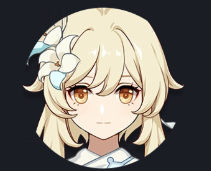

Anemo Element | Main Character (Female)

Lumine is the female protagonist of Genshin Impact and one of two possible travelers. Like her counterpart Aether, she arrives in Teyvat searching for her lost sibling. Separated by unknown forces, Lumine embarks on an epic journey across the continent to reunite with what she lost.
Lumine's graceful combat style and determination have earned her respect from many regions. Despite her initial unfamiliarity with Teyvat, she quickly adapts and becomes an invaluable ally to those she meets. Her journey is marked by profound discoveries and meaningful connections that shape her destiny.
Lumine's preferred weapons for combat:
A legendary sword with ethereal grace, delivering swift and powerful strikes.
An elegant jade-forged blade that enhances both defensive and offensive capabilities.
A sword infused with elemental energy, granting increased damage based on elemental affinities.
Lumine's favorite hobby is painting and capturing the beauty of Teyvat. She has a deep appreciation for art and finds inspiration in every landscape she encounters. From serene valleys to majestic mountains, she loves to immortalize these moments on canvas.
Beyond painting, Lumine enjoys spending quiet moments with her companions, sharing stories and dreams around a campfire. She values the meaningful conversations and bonds that develop through these intimate moments, finding that true wealth lies in friendship and shared experiences.